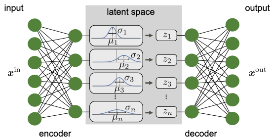
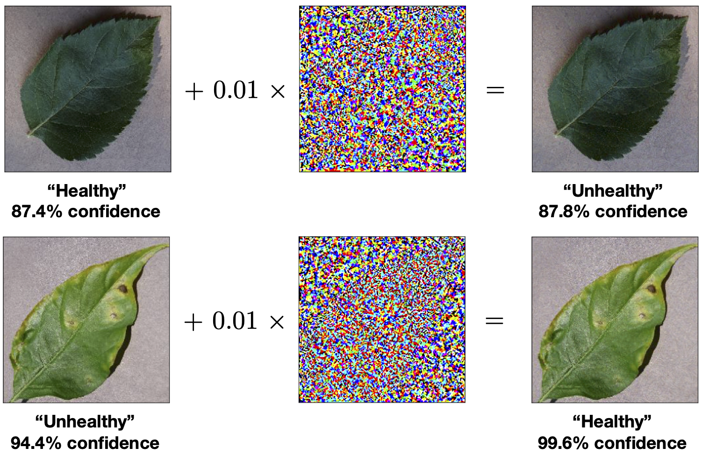
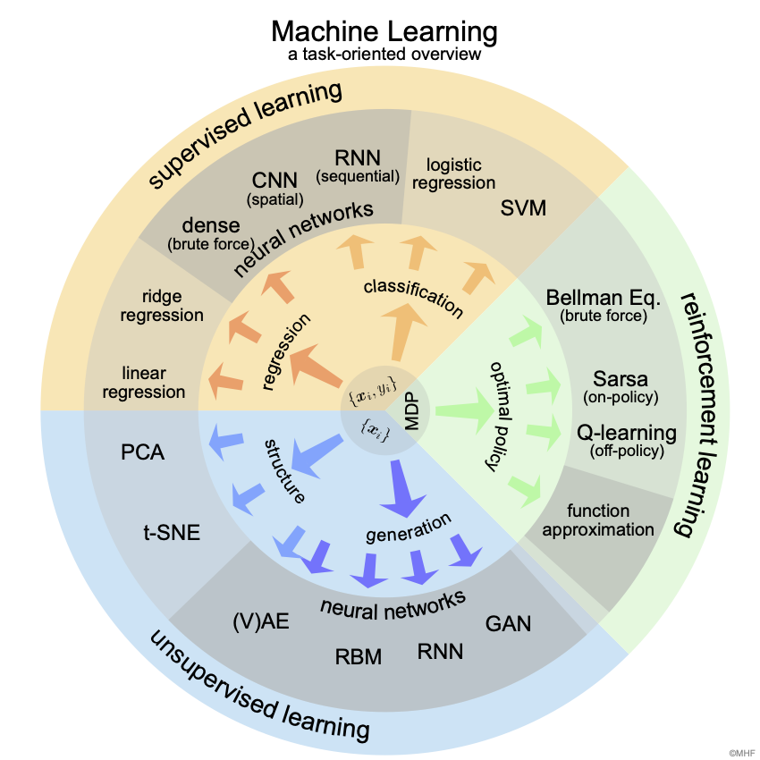

Machine Learning for Scientists¶
This is an introductory machine learning course specifically developed with STEM students in mind, written by the theoretical Condensed Matter Theory group at the University of Zurich and the Quantum Matter and AI group at the Delft University of Technology. If you use the content of this webpage, please cite this arXiv:XX paper to acknowledge the work put into the development of this lecture. In case of questions or comments, feel free to contact us at mail@sth.com.






